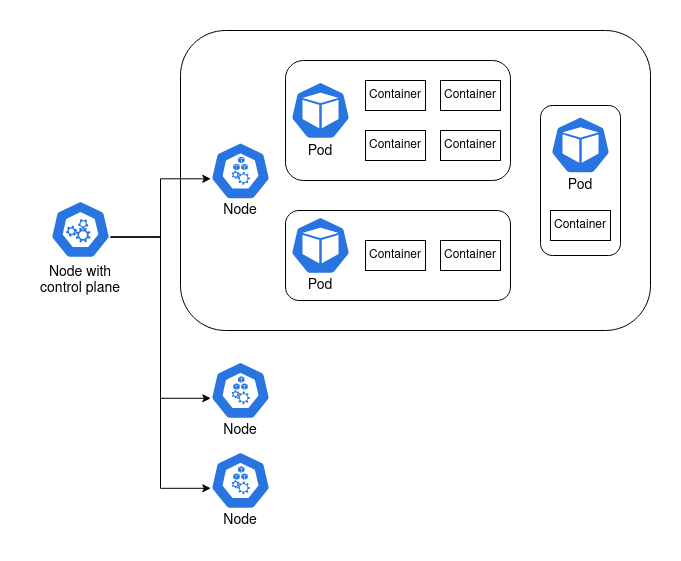
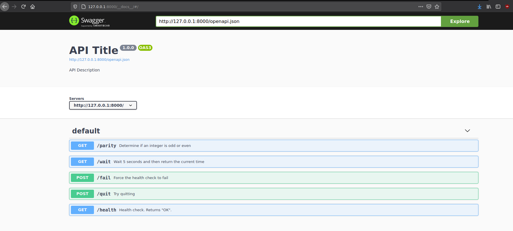
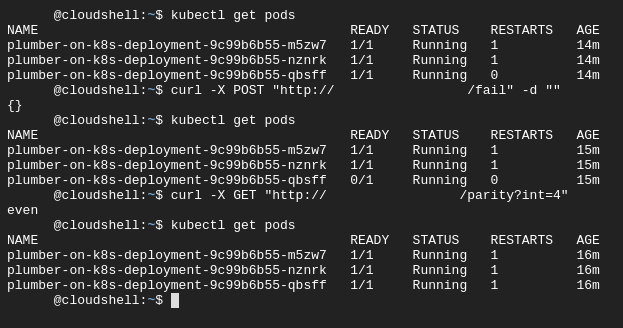
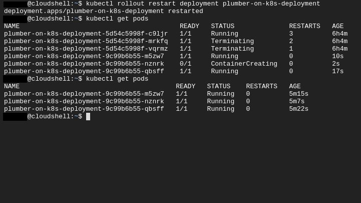

I’ve set myself an ambitious goal of building a Kubernetes cluster out of a couple of Raspberry Pis. This is pretty far out of my sphere of knowledge, so I have a lot to learn. I’ll be writing some posts to publish my notes and journal my experience publicly. In this post I’ll go through the basics of Kubernetes, and how I hosted a Plumber API in a Kubernetes cluster on Google Cloud Platform.
The central concept of Kubernetes is the container. When I have an application that I want to deploy, I can bundle it up together with the software that it requires to run into a single blob called a container. That container can then be run on another machine that doesn’t have the application or its dependencies installed. The Rocker project, for example, provides containers with R or RStudio and all of their dependencies. I can run that container on another machine and access R or RStudio, without actually installing R or RStudio. The most common software for creating and running containers is called Docker.
Containers solve a lot of problems. I can bundle up an R script with the exact versions of the packages it uses to have a reproducible analysis. I can turn my R script into an API with plumber and put that in a container, so that running the container hosts the API. I can run multiple containers on the same machine, even if the applications are unrelated. If one of my applications requires version 3.6 of R, and another requires 4.0, then they can run side-by-side in containers.
There’s complexity involved with running many containers, and it’s this complexity Kubernetes targets. I provide Kubernetes with a description of what I want the system to look like. I might ask for “3 copies of container A, and 2 copies of container B at all times” and Kubernetes will do its best to make that a reality.
Kubernetes is almost always run on a cluster of multiple machines. It can run copies of the same container (replicas) across multiple machines so that they can share a computational load, or so that if one falls over there’s another container ready to pick up the slack. In fact, Kubernetes doesn’t consider containers precious; they’re treated as ephemeral and replaceable. This also makes it easier to scale if there’s a spike in demand: just add more containers!1
It’s not as simple as Kubernetes running containers, though. There are a few layers in between.
A node is a machine. It can be a Raspberry Pi, an old laptop, or a server with a six-figure price tag. Or it can be a virtual machine like an AWS EC2 instance.
At least one of these nodes is special. It contains the control plane2, and it’s what coordinates the containers. The other nodes are called worker nodes, and it’s on these nodes that the containers are run.
There’s another layer in between node and container, and it’s the pod. Containers are grouped together in pods. Containers that rely on each other to perform a common goal are configured by the user to run in a pod together. A simple container that doesn’t rely on anything else can run in a pod by itself. In practice, the user configures pods, not containers.

I started by making a container that runs a simple Plumber API. The plumber package lets me turn R functions into API endpoints. I created a plumber.R file that defines a few simple functions that I can use for testing:
/parity determines if a given integer is odd or even/wait waits 5 seconds, then returns the current time as a nicely formatted string/fail sets the alive global variable to FALSE./quit runs quit(), exiting the R process that runs the API./health returns “OK” if the alive global variable is TRUE, and throws an error otherwise.Note the special #* comments. These tell the plumber package how to map the function to an API endpoint. I’m also using futures for asynchronous calls, a feature introduced recently in Plumber 1.0.0. R is fundamentally a single-threaded language, and so an API like this would normally only be able to serve one request at a time. The future package overcomes this.
# plumber.R
alive <<- TRUE
#* Determine if an integer is odd or even
#* @serializer text
#* @param int Integer to test for parity
#* @get /parity
function(int) {
future({
if (as.integer(int) %% 2 == 0) "even" else "odd"
})
}
#* Wait 5 seconds and then return the current time
#* @serializer json
#* @get /wait
function() {
future({
Sys.sleep(5)
list(time = Sys.time())
})
}
#* Force the health check to fail
#* @post /fail
function() {
alive <<- FALSE
NULL
}
#* Try quitting
#* @post /quit
function() {
quit()
}
#* Health check. Returns "OK".
#* @serializer text
#* @get /health
function() {
future({
if (!alive) stop() else "OK"
})
}I needed one other file: something that sets up dependencies, sources plumber.R, and runs the API. I called it entrypoint.R:
# entrypoint.R
library(plumber)
library(promises)
library(future)
future::plan("multiprocess")
pr("plumber.R") %>% pr_run(host='0.0.0.0', port = 8000)At this point I had enough to run my API. On my laptop I could run Rscript entrypoint.R and the API would be hosted locally, accessible only through my machine. By packaging it into a Docker container I could start to think about moving my API onto a different machine.
To create a container3, I wrote out a “Dockerfile” that goes through the build process step-by-step. I can user Docker to build this Dockerfile into an image, which can then be run on another machine. The full Dockerfile is available here, but I’ll break it down below to make the process clearer.
Docker containers can build on one another. I start FROM the rocker/r-ver:4.0.2, provided by the Rocker project, which provides me with a Debian environment with R version 4.0.2 installed.
# Dockerfile
FROM rocker/r-ver:4.0.2Next I need to install some system dependencies required by plumber. The RStudio Package Manager is a good resource for determining system dependencies. Even though these system packages are already available on my laptop, they aren’t necessarily available in the rocker parent image, so I have to install them.
RUN apt-get update -qq && apt-get -y --no-install-recommends install \
make \
libsodium-dev \
libicu-dev \
libcurl4-openssl-dev \
libssl-devMy API requires three R packages: plumber, promises, and future. I’ll install them using the precompiled binaries provided by the RStudio Package Manager. This makes the build process much faster, and also lets me pin the packages to the versions available as of a given date — in this case, 2020-10-01. I set the repository URL to an environment variable, which I then reference in R. An alternative approach here would be to add an renv lockfile to the image, and then restore it.
ENV CRAN_REPO https://packagemanager.rstudio.com/all/__linux__/focal/338
RUN Rscript -e 'install.packages(c("plumber", "promises", "future"), repos = c("CRAN" = Sys.getenv("CRAN_REPO")))'Every command in the Dockerfile is, by default, run with administrative privileges. That’s why I was able to run apt-get install without prefixing sudo. Docker suggests changing the user to one without root privileges if possible, and my little Plumber API certainly doesn’t need root privileges. I’ll create a new plumber user, which I’ll later switch to with the USER command.
RUN groupadd -r plumber && useradd --no-log-init -r -g plumber plumberNow I’ll add the files I need to run my API. I’ll put them in the home directory of the plumber user I just created.
ADD plumber.R /home/plumber/plumber.R
ADD entrypoint.R /home/plumber/entrypoint.RMy API will be run through port 8000, but it will use port 8000 within the container. The EXPOSE command tells Docker that I intend to make this port available to the environment outside the container.
EXPOSE 8000All of this setup makes the final steps fairly straightforward: change the working directory to the directory which contains my R files, switch to the plumber user, and run entrypoint.R.
WORKDIR /home/plumber
USER plumber
CMD Rscript entrypoint.RTo turn my Dockerfile into an image, I ran the following command in a shell:
docker build -t mdneuzerling/plumber-on-k8s <directory-with-files>That last argument points to the directory containing plumber.R and entrypoint.R. If that’s my working directory, I can instead use . as this value. The -t is a tag, which is a convenient way of identifying the resulting image. It could be anything, but I set it to match the Github repository in which these files are hosted.
It can take a while to build an image, but Docker uses some smart caching along the way. If I change any line of the Dockerfile, only that line and what comes after will be rebuilt. For this reason, it’s generally good practice to put the stable time-consuming components of the Dockerfile (system dependencies, R package installations) towards the top of the file, and the components that are more likely to change towards the bottom.
To run my API, I use this command:
docker run -p 8000:8000 mdneuzerling/plumber-on-k8sContainers have their own internal network of sorts. Earlier I exposed port 8000 in the container. Now I need to link port 8000 on my laptop to port 8000 within the container. This is what -p 8000:8000 does.
Plumber APIs come with a pretty Swagger interface for testing the API. When I run the above command, I’m prompted to go to http://127.0.0.1:8000/__docs__/ in my browser. And, sure enough, the API is there:

I needed to store my container somewhere accessible. A Docker Registry stores built Docker images, and is kind of like git for containers. Docker Hub is a registry provided by Docker itself, and offers a generous free tier.
I hadn’t used Docker Hub to host an image before, but I found the process very straightforward. I created a public repository for my image, and then linked it to a GitHub repository of the same name. With very little effort I had a workflow in place such that pushing changes to my GitHub repository automatically rebuilt the image on Docker Hub!
With my Raspberry Pi cluster components still in the mail, I had two options for trying out Kubernetes:
minikube, which sets up a cluster running on my laptopI had some difficulty getting minikube to work, and I liked the idea of hosting my API in a publicly accessible location, so I went with a cloud provider. All three major providers offer hosted Kubernetes services, but I went with Google Kubernetes Engine on Google Cloud Platform There wasn’t an in-depth comparison here; I went with the service that looked like it had friendlier documentation.
A hosted Kubernetes service means that some of the complexity of managing a cluster is abstracted away. In the case of Google Kubernetes Engine (GKE), it means that the control plane is handled for me. Every node I create will be a worker node. A warning here: every node is a Compute VM instance that costs money, but my little API can get by on very cheap instances: I selected g1-small (1 vCPU, 1.7 GB memory) VMs.
I won’t try to compete with Google’s GKE documentation. Instead, here’s a high-level overview of the steps I took to get my cluster up-and-running:
get-credentials to connect to the cluster.From here on out I could use the kubectl command to configure and control my cluster from a Cloud Shell. I took note of the cluster’s external IP address as well — I would later use this to query my API.
The kubectl command contains everything I need to configure my cluster. I was using it so frequently that I was tempted to alias it to k. The big one is get, which lists all instances of the specified resource (I’ll explain deployments and services in a moment):
kubectl get pods
kubectl get deployments
kubectl get servicesThe other big one is apply. Kubernetes is most commonly configured by providing kubectl with YAML configuration files that tell the cluster how things should be. To “activate” one of these YAML files, I would write:
kubectl apply -f <file-location>The -f tag indicates a file, but <file-location> could also be the URL of a YAML file. This was convenient for me, because I could point it towards the files as they were hosted on Github. My workflow was:
kubectl applyPods, and the containers they hold, are created through a deployment. The YAML for a deployment specifies which pods to create and how many replicas to maintain, as well as various pieces of metadata. Here’s the deployment I used for my API:
apiVersion: apps/v1
kind: Deployment
metadata:
name: plumber-on-k8s-deployment
spec:
replicas: 3
selector:
matchLabels:
app: plumber-on-k8s
template:
metadata:
labels:
app: plumber-on-k8s
spec:
containers:
- name: plumber-on-k8s
image: mdneuzerling/plumber-on-k8s
ports:
- containerPort: 8000
livenessProbe:
httpGet:
path: /health
port: 8000
initialDelaySeconds: 3
periodSeconds: 3
readinessProbe:
httpGet:
path: /health
port: 8000
initialDelaySeconds: 3
periodSeconds: 3There’s a lot to unpack here, since not everything in this YAML is obvious:
apiVersion is used so that as the Kubernetes API updates and the expected format of these YAML files changes, the correct version can be used for the given configuration. I am unsure what “apps” means — it isn’t explained in any easily Google-able location.replicas refers to how many of the pods should be kept alive at all time. If a pod fails, Kubernetes will restart it to ensure that the number of available pods matches the specified number of replicas.selector tells Kubernetes which pods are part of this deployment. In this case, the pods are created in the same YAML file as the deployment, so it may seem somewhat redundant. But this isn’t always the case.template is how pods are specified. We use the mdneuzerling/plumber-on-k8s image, which is assumed to be from Docker Hub. However, I could just as easily refer to an image in a different or even private Docker registry.containerPort tells Kubernetes which ports are going to be used outside the container. I was confused at first by how often I have to specify port numbers! But given that there are so many layers of networks here (container, pod, cluster, external), I can understand why it is so important to be specific.The last two fields of interest are the probes. A livenessProbe provides a method for Kubernetes to determine if a container is alive and accepting traffic. In this case, I’m pointing it towards the /health endpoint I defined in plumber.R. I believe that all that is required from the endpoint is a status code of 200, and that the actual content of the response is irrelevant, but I couldn’t get a clear picture of this.
I also have a readinessProbe. While my container is simple and starts up pretty quickly, this isn’t true of all containers. Imagine a container that hosts a complicated machine learning model — it will take at least a few seconds to load the required model into memory. In this case, Kubernetes will wait until the readinessProbe succeeds before sending traffic to the pod.
In my case, the livenessProbe and readinessProbe both point towards the /health endpoint. This is because that endpoint will not be available until plumber has finished loading, so it serves the same purpose. This isn’t always the case for every API. The advantage of defining both is that the livenessProbe is ignored until the container reports as ready, subject to a timeout period.
A deployment of an API is, by itself, not particularly useful. I now had three pods, each hosting an API on port 8000. This isn’t possible on one network: in fact, each pod has a separate network. In order to get traffic flowing to this deployment, I needed to declare a service.
Pods are ephemeral; they come and go. That’s why a service is required to describe how pods should be accessed. Here is the service I used:
apiVersion: v1
kind: Service
metadata:
name: plumber-on-k8s-service
spec:
selector:
app: plumber-on-k8s
ports:
- protocol: TCP
port: 8000
targetPort: 8000Services have an integrated load balance that will attempt to spread traffic evenly across the pods. If a pod fails (as indicated by its livenessProbe) then traffic will be seamlessly routed to the available nodes.
In order to actually query my API, there’s one last component I needed to put in place. An ingress directs traffic from outside the cluster to a service inside the cluster.
I found it difficult to find a configuration that would work. I suspect that the ingress API is under development at the moment (note the beta in the apiVersion), and may have changed significantly in version 1.19 of Kubernetes.
apiVersion: networking.k8s.io/v1beta1
kind: Ingress
metadata:
name: plumber-on-k8s-ingress
spec:
rules:
- http:
paths:
- path: /health
backend:
serviceName: plumber-on-k8s-service
servicePort: 8000
- path: /parity
backend:
serviceName: plumber-on-k8s-service
servicePort: 8000
- path: /wait
backend:
serviceName: plumber-on-k8s-service
servicePort: 8000
- path: /fail
backend:
serviceName: plumber-on-k8s-service
servicePort: 8000
- path: /quit
backend:
serviceName: plumber-on-k8s-service
servicePort: 8000Here I’ve specified five paths which are directed to the plumber-on-k8s-service I previously defined. I could make the spec more compact with regular expressions, or by passing on all traffic regardless of path, but I chose to be explicit here.
With a deployment, service and ingress defined, I now have everything in place to query my API. Using the external IP address (listed in the GCP console), I can send queries from my laptop:
curl -X GET http://<cluster-ip>/parity?int=15
oddI can now also start to explore some of the features that come “for free” with using Kubernetes. Watch below what happens when I deliberately make a container fail its livenessProbe (I’ve censored some details in this screenshot):

It doesn’t matter that one of the pods is temporarily unable to accept traffic — the service routes all traffic to the remaining 2 available pods. Kubernetes notices that something is wrong: my deployment.yaml file asks for 3 replicas, but there are only 2 live pods. It then restarts the pod, so that reality reflects the configuration.
At one point I updated my Dockerfile, and I needed the deployment to fetch the new pods. I asked Kubernetes to do a “rolling restart”. It brought up new pods and took the old ones offline systematically, so that the service remained uninterrupted:

devtools::session_info()## ─ Session info ───────────────────────────────────────────────────────────────
## setting value
## version R version 4.1.0 (2021-05-18)
## os macOS Big Sur 11.3
## system aarch64, darwin20
## ui X11
## language (EN)
## collate en_AU.UTF-8
## ctype en_AU.UTF-8
## tz Australia/Melbourne
## date 2021-05-30
##
## ─ Packages ───────────────────────────────────────────────────────────────────
## package * version date lib source
## blogdown 1.3 2021-04-14 [1] CRAN (R 4.1.0)
## bookdown 0.22 2021-04-22 [1] CRAN (R 4.1.0)
## bslib 0.2.5.1 2021-05-18 [1] CRAN (R 4.1.0)
## cachem 1.0.4 2021-02-13 [1] CRAN (R 4.1.0)
## callr 3.7.0 2021-04-20 [1] CRAN (R 4.1.0)
## cli 2.5.0 2021-04-26 [1] CRAN (R 4.1.0)
## crayon 1.4.1 2021-02-08 [1] CRAN (R 4.1.0)
## desc 1.3.0 2021-03-05 [1] CRAN (R 4.1.0)
## devtools 2.4.0 2021-04-07 [1] CRAN (R 4.1.0)
## digest 0.6.27 2020-10-24 [1] CRAN (R 4.1.0)
## ellipsis 0.3.2 2021-04-29 [1] CRAN (R 4.1.0)
## evaluate 0.14 2019-05-28 [1] CRAN (R 4.1.0)
## fastmap 1.1.0 2021-01-25 [1] CRAN (R 4.1.0)
## fs 1.5.0 2020-07-31 [1] CRAN (R 4.1.0)
## glue 1.4.2 2020-08-27 [1] CRAN (R 4.1.0)
## htmltools 0.5.1.1 2021-01-22 [1] CRAN (R 4.1.0)
## jquerylib 0.1.4 2021-04-26 [1] CRAN (R 4.1.0)
## jsonlite 1.7.2 2020-12-09 [1] CRAN (R 4.1.0)
## knitr 1.33 2021-04-24 [1] CRAN (R 4.1.0)
## lifecycle 1.0.0 2021-02-15 [1] CRAN (R 4.1.0)
## magrittr 2.0.1 2020-11-17 [1] CRAN (R 4.1.0)
## memoise 2.0.0 2021-01-26 [1] CRAN (R 4.1.0)
## pkgbuild 1.2.0 2020-12-15 [1] CRAN (R 4.1.0)
## pkgload 1.2.1 2021-04-06 [1] CRAN (R 4.1.0)
## prettyunits 1.1.1 2020-01-24 [1] CRAN (R 4.1.0)
## processx 3.5.2 2021-04-30 [1] CRAN (R 4.1.0)
## ps 1.6.0 2021-02-28 [1] CRAN (R 4.1.0)
## purrr 0.3.4 2020-04-17 [1] CRAN (R 4.1.0)
## R6 2.5.0 2020-10-28 [1] CRAN (R 4.1.0)
## remotes 2.3.0 2021-04-01 [1] CRAN (R 4.1.0)
## rlang 0.4.11 2021-04-30 [1] CRAN (R 4.1.0)
## rmarkdown 2.8 2021-05-07 [1] CRAN (R 4.1.0)
## rprojroot 2.0.2 2020-11-15 [1] CRAN (R 4.1.0)
## sass 0.4.0 2021-05-12 [1] CRAN (R 4.1.0)
## sessioninfo 1.1.1 2018-11-05 [1] CRAN (R 4.1.0)
## stringi 1.6.1 2021-05-10 [1] CRAN (R 4.1.0)
## stringr 1.4.0 2019-02-10 [1] CRAN (R 4.1.0)
## testthat 3.0.2 2021-02-14 [1] CRAN (R 4.1.0)
## usethis 2.0.1 2021-02-10 [1] CRAN (R 4.1.0)
## withr 2.4.2 2021-04-18 [1] CRAN (R 4.1.0)
## xfun 0.22 2021-03-11 [1] CRAN (R 4.1.0)
## yaml 2.2.1 2020-02-01 [1] CRAN (R 4.1.0)
##
## [1] /Library/Frameworks/R.framework/Versions/4.1-arm64/Resources/libraryI count at least three different ways to scale with Kubernetes. Adding more containers is just an example.↩︎
The deprecated term for the node with the control plane is the master node. This is the only time I will refer to the node with this terminology.↩︎
There is a subtle difference here between a “container” and an “image”, but it’s a difference I’m going to disregard as it only confuses the situation without benefit.↩︎